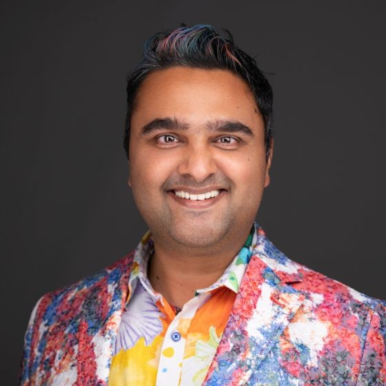

Applied AI Engineer. Production ML systems. Frustrated by the missing infrastructure layer — so I built it.

Spent years at Meta helping organizations move Llama from concept to production — fine-tuning on proprietary data, optimizing inference, architecting systems that scale. The models kept getting better. The infrastructure around them didn't.
Every team I worked with hit the same walls: no good way to trace what an agent actually did, no systematic way to know which model was best for their specific task, no way to find out why a pipeline was failing without adding print statements and re-running manually. The gap between "the model works in a notebook" and "the system works in production" was real and nobody was closing it.
Aevyra is the infrastructure I kept wishing existed — open-source, across the stack, built by someone who has actually shipped production LLM systems.
Applied AI Engineer deploying custom Llama solutions across organizations in different verticals. Expertise in fine-tuning on proprietary datasets, data and model distillation for cost and latency optimization, and architectural customizations. Leading technical strategy for Llama adoption across Meta's enterprise and partner ecosystems.
#4 all-time contributor with 177+ merged PRs. Led integration of TensorRT-LLM, vLLM, torch.compile, and torch.export into TorchServe. Architected a 75% cost reduction in multi-model GPU inference. Established TorchServe as the industry standard for Llama serving at scale (4.4K+ stars).
Deep expertise in torch.compile, torch.export, and hardware optimization across GPU, Trainium, Inferentia, and Graviton. Published extensively on the PyTorch blog covering peak performance optimization, RAG systems, and hardware-specific tuning. Speaker at Google Cloud Next '25 on Llama deployment patterns.
Active contributor to Llama Cookbook (18.2K+ stars). Writing on pytorch.org covering inference optimization, RAG performance, and production deployment patterns.
If you're deploying agents in production and hitting walls — with tracing, evaluation, debugging, or knowing which model is actually right for your task — I'd like to hear about it.